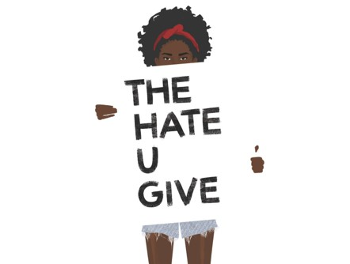
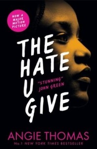

A book review on: “The Hate U Give”
Published on: 22/12/2023
Written by Molly Rooney


Two Book Covers for The Hate U Give
In October, my English class and I started reading “The Hate U Give” (Or “Thug”) and since we’re almost
at the end of it, I would like to share what I thought of the book with you. I hope that by the end of my book review, you feel encouraged
to start reading this thought-provoking book. If you would like to read this book, you can find a copy of it in our School Library; But
please remember to bring the book back after you finish reading it, as someone else might like to read it too!
Before we go ahead, I should clear up some terms and acronyms used in this book review.
In my opinion, these covers are quite clever and unique. On the left side of the text, you can see the title of the book is an acronym
for “Thug”. A prevalent topic in this book is racism and stereotypes against people of colour, an example of these stereotypes is that
people of colour are “Thugs”; therefore, the author is already giving us a hint of what topics the book may include. Also, there is a picture
of a girl's face in both of these photos - which makes it look like it's an autobiography. In this book, a girl called “Starr” talks about
these traumatic experiences happening in her life, from her perspective. Hence, the author is giving us another clue as to how the book is
being told.
According to Goodreads, this book is about “Sixteen-year-old Starr Carter moves between two worlds: the poor neighbourhood where she lives
and the fancy suburban prep school she attends. The uneasy balance between these worlds is shattered when Starr witnesses the fatal shooting of
her childhood best friend Khalil at the hands of a police officer. Khalil was unarmed.
Soon afterward, his death made a national headline. Some are calling him a thug, maybe even a drug dealer and a gangbanger. Protesters are taking
to the streets in Khalil’s name. Some cops and the local drug lord try to intimidate Starr and her family. What everyone wants to know is: what
really went down that night? And the only person alive who can answer that is Starr.
But what Starr does—or does not—say could upend her community. It could also endanger her life."
The plot/blurb of the book caught my attention as I have never read a book that has a really distinctive storyline, and for it to also be part of
the school curriculum (As there aren't many books that are a part of the curriculum that talk about POC’ [person of colour) experiences with
discrimination]. Also, one of the reasons as to why the author created this book was because she was inspired by the BLM (black lives matter) movement;
which makes it even more real and impressive.
Some themes that are covered in this book include (But are not limited to):
Duelling Identities (Living in a mostly POC neighbourhood that is overrun with crime and poverty, yet going to a posh school named “Williamson”
that doesn’t have many POC students), BLM, Racism and police brutality, Family, Poverty and Crime.
The main theme in this book is focused around Justice, as Starr’s friend (Khalil) gets shot by a police officer and Starr tries to get justice for
her friend throughout the book.
Angie Thomas was inspired to write this book because she felt compelled to speak out about POC in real life who are killed because of police
brutality. In an interview she said she was inspired to write the book because of “..the shooting death of Oscar Grant in 2009. In my anger, In
my anger, frustration, and hurt, I only knew to do one thing — and that was write. At the time I wondered “What would happen if that took place
in my neighbourhood? How would we react?” I wanted to show the human side of stories like Oscar’s.”
In the book, police brutality is clearly shown and talked about; therefore in my opinion, she clearly achieved her purpose of why she wrote that
book.
I think this book should be read in schools for a couple of reasons:
The book's target audience is young people, this is shown by the use of “Slang” in it and most of the main characters being young people. There
aren’t enough books in the school curriculum that are written by Black authors or have a plot that is focused around discrimination against POC,
and as a school that is a part of the schools of sanctuary there really should be more books in the curriculum such as this one.
It’s relevant in today's society. In the 21st century, there are still instances of black individuals being killed by police officers because of
the stereotypes put against them, the most recent and known case being George Floyd.
In conclusion, I quite enjoyed reading this book. Specifically, what I liked most about it were the backstories of the main characters, how they
discussed topics that I haven’t seen in many books before, and how accurate it was to real life, as some POC may have also been affected by
racism at one point in their lives. But there were some things I didn’t like in the book, such as: the teen romance (which I found it a bit
unnecessary); how long the book was (I think the author should’ve taken it two or three chapters down); and how the teenagers in the book aren’t
an accurate portrayal of what teens actually do/say in real life.
Thank you for taking the time to read my book review!